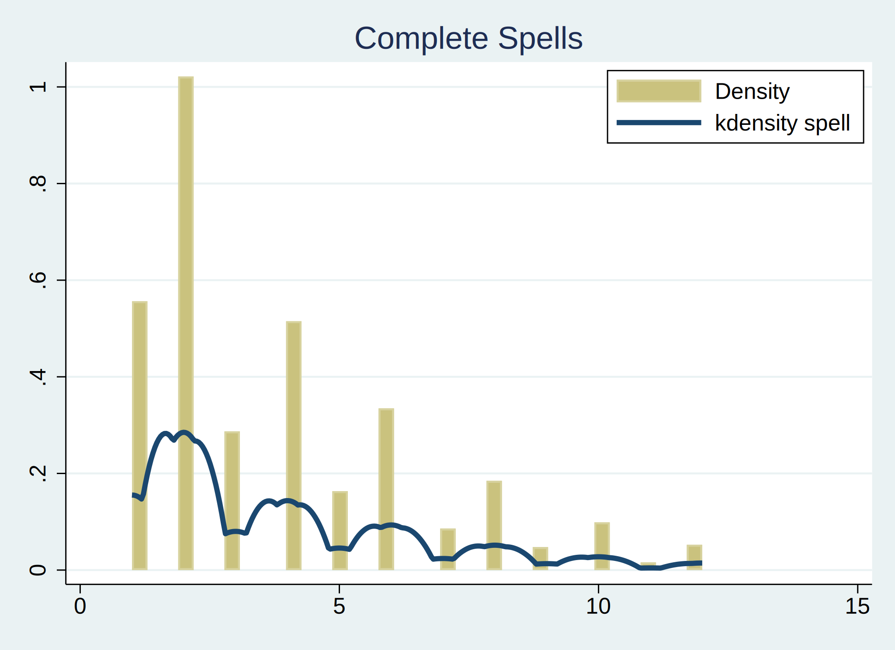
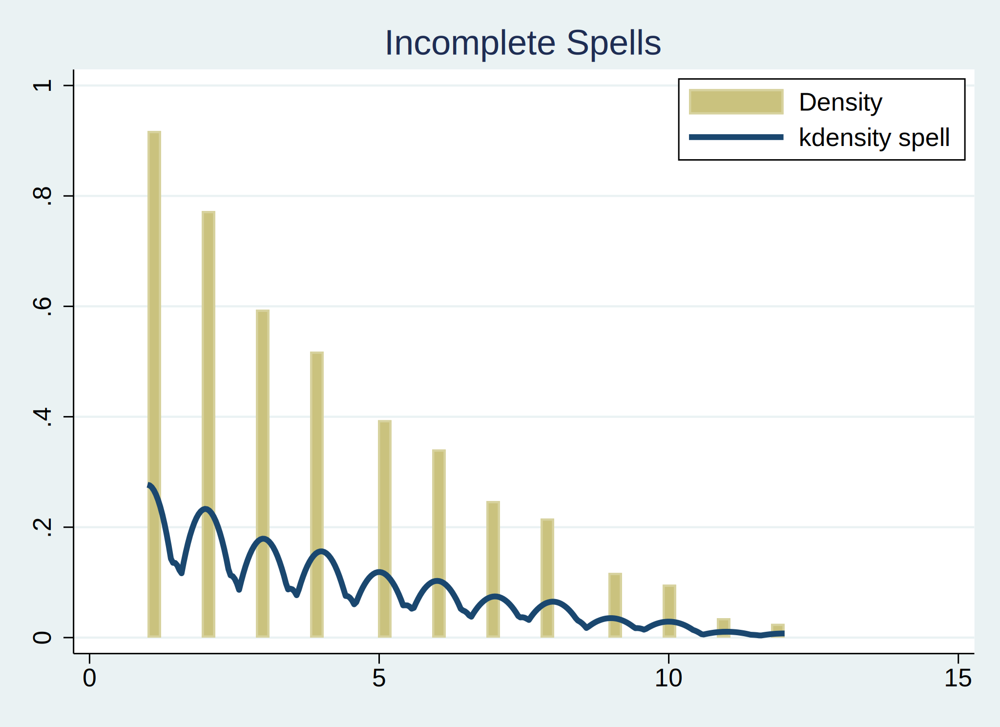
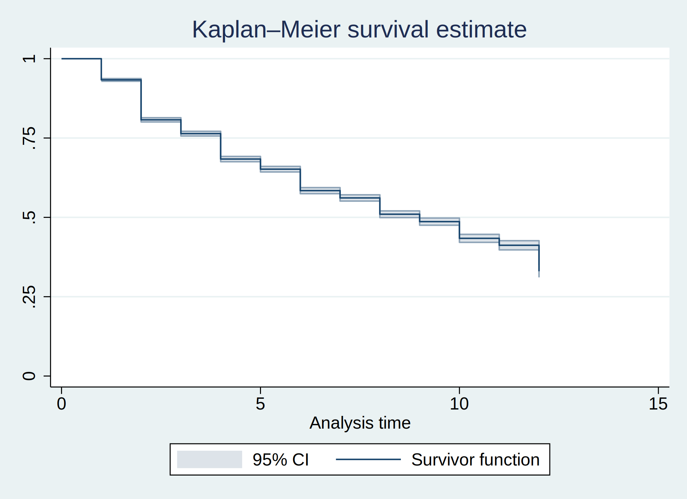
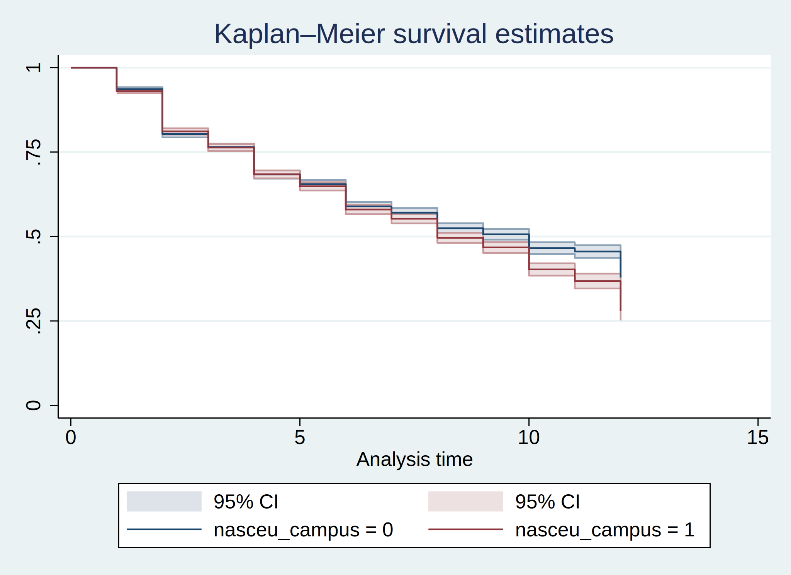
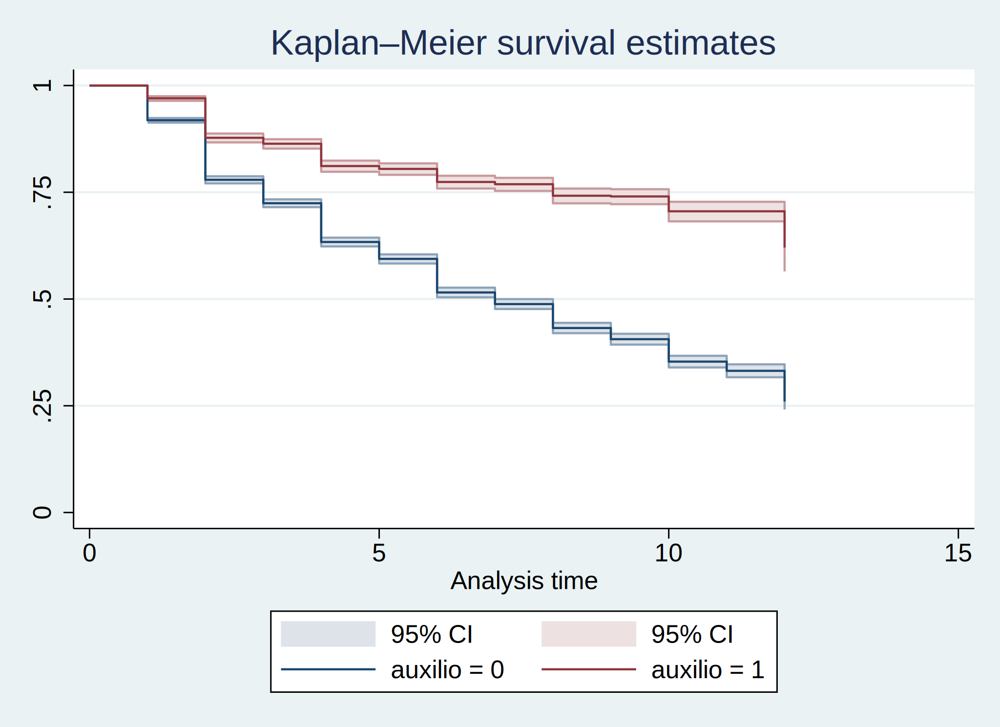
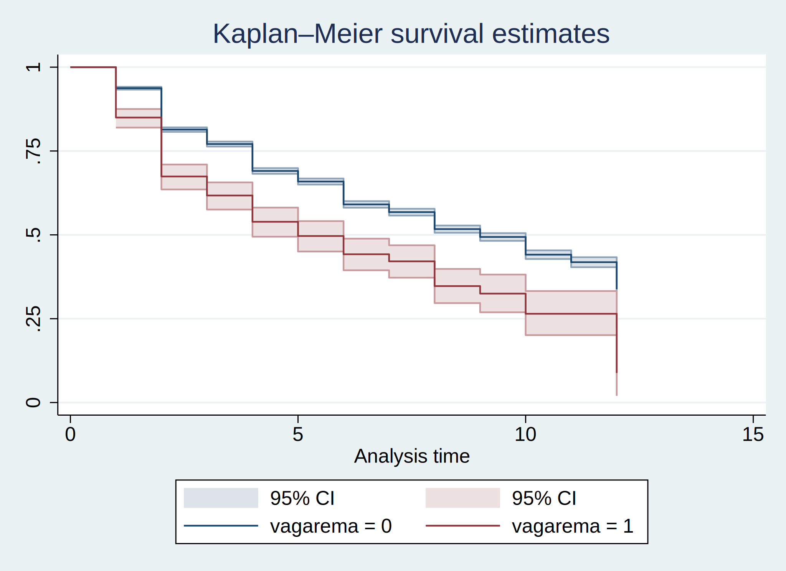
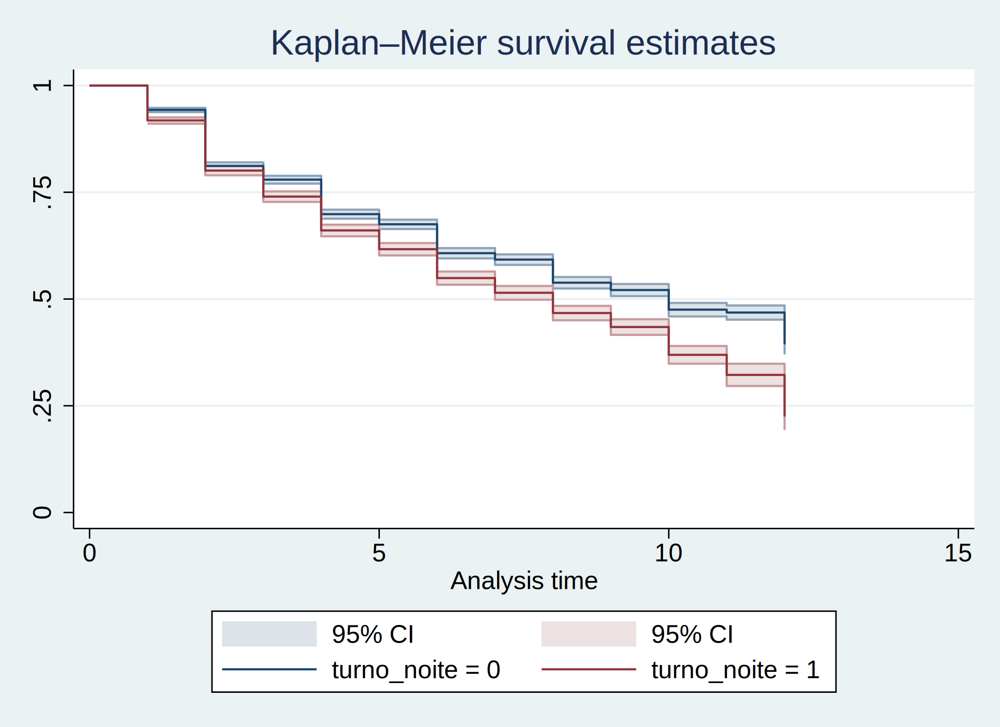
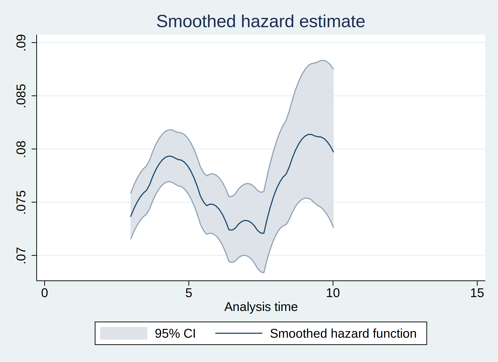
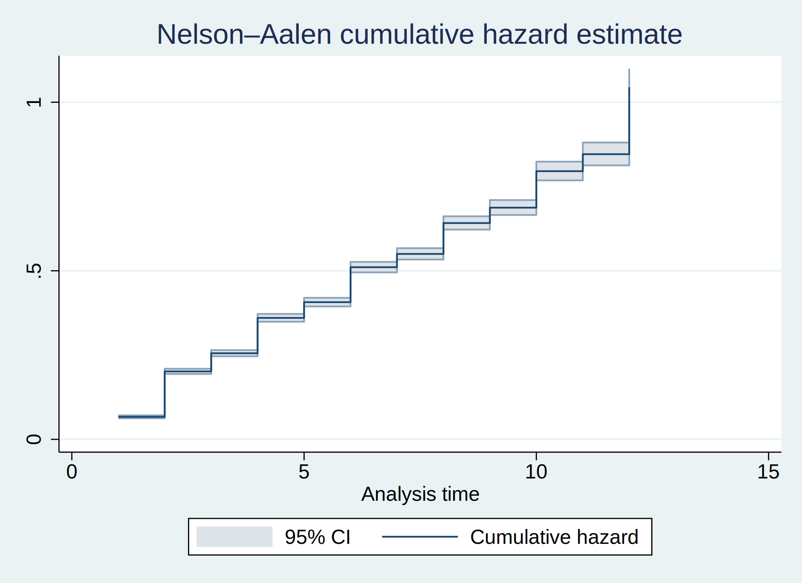

Estimação e análise de modelos de sobrevivência
By: Edurado Tillman & Ricardo Leal
Cuidar forma de ingresso: excluir mobilidades internacional/nacional, outros e transf PSVO, PECG, Selecao Campo, Indigena, Quilombola e Uruguai não tem ENEM! Fica só ingressos por SISU e Vagas Remanescente (quem fez ENEM também).
. bys id: keep if inlist(ingresso, "SISU", "VagaRema")
(7,358 observations deleted)
. gen vagarema = (ingresso=="VagaRema")
. *---
. label variable vagarema "Ingresso por Vaga Remanescente"
. drop ingresso
. aorder
. stset spell, id(id) failure(t_evadiu_univ=1) noshow
. stdescribe
|-------------- Per subject --------------|
Category Total Mean Min Median Max
------------------------------------------------------------------------------
Number of subjects 13687
Number of records 65002 4.749178 1 4 12
Entry time (first) 0 0 0 0
Exit time (final) 4.749178 1 4 12
Subjects with gap 0
Time on gap 0 . . . .
Time at risk 65002 4.749178 1 4 12
Failures 5518 .4031563 0 0 1
------------------------------------------------------------------------------
Análise do ouput acima:
Evadiram da universidade 40,32% dos alunos ingressantes na FURG, através do SISU ou de vagas remanescentes, de 2013/1 a 2018/2. Foram 5.518 dos 13.687.
O máximo de tempo que um aluno ficou na universidade antes de evadir é de 12 semestres – o mínimo foi 1. A média foi de 4,8 semestres.
Não há hiato de tempo nos regristros por aluno.
. stsum
| Incidence Number of |------ Survival time -----|
| Time at risk rate subjects 25% 50% 75%
---------+---------------------------------------------------------------------
Total | 65,002 .0848897 13687 4 9 .
Análise do ouput acima:
Em média, em cada período, 8,5% dos spells resultam em evasão da universidade (taxa de incidência).
O primeiro quartil do tempo de sobrevivência dos alunos é de 4 semestres. A partir do 4º semestre do aluno é que a proporção dos que evadem (não sobrevivem) passa a ser maior que 25%. Por outra: antes do 4º semestre, menos de 25% dos alunos do semestre não sobrevivem (evadem). [Quanto maior o tempo de sobrevivência, melhor.]
O tempo de sobrevivência mediano (percentil 50%) é de 9 semestres.
“The 25th, 50th, and 75th percentiles of survival times are obtained from S(t), the Kaplan–Meier product-limit estimate of the survivor function. The 25th percentile, for instance, is obtained as the minimum value of t such that S(t) ≤ 0.75.”
. stsum, by(campus)
| Incidence Number of |------ Survival time -----|
campus | Time at risk rate subjects 25% 50% 75%
---------+---------------------------------------------------------------------
RGr/Carr | 55,222 .0838796 11524 4 9 .
RGr/Saúd | 4,221 .0390903 759 8 . .
SAP | 1,748 .1413043 426 2 5 12
SLS | 1,067 .1471415 305 2 5 .
SVP | 2,744 .1155248 673 2 6 .
---------+---------------------------------------------------------------------
Total | 65,002 .0848897 13687 4 9 .
Análise do ouput acima:
A taxa de incidência de evasão é muito maior nos campi fora de sede. A menor é no campus Saúde.
. stsum, by(auxilio)
| Incidence Number of |------ Survival time -----|
auxilio | Time at risk rate subjects 25% 50% 75%
---------+---------------------------------------------------------------------
0 | 45,896 .1025144 10940 3 7 .
1 | 19,106 .0425521 4527 8 . .
---------+---------------------------------------------------------------------
Total | 65,002 .0848897 13687 4 9 .
Análise do ouput acima:
A taxa de incidência de evasão é menos da metade entre os que recebem auxílio (alimentação, moradia, pre-escolar, transporte ou bolsa).
Para quem recebe auxílio, o primeiro quartil do tempo de sobrevivência é só no 8º semestre (a partir deste semestre é que a proporção dos que não sobrevivem é maior que 25%).
. stsum, by(escola_pub )
| Incidence Number of |------ Survival time -----|
escola~b | Time at risk rate subjects 25% 50% 75%
---------+---------------------------------------------------------------------
0 | 16,253 .0746324 3254 4 10 .
1 | 48,749 .0883095 10433 4 8 .
---------+---------------------------------------------------------------------
Total | 65,002 .0848897 13687 4 9 .
Análise do ouput acima:
Não parece ter muita diferença na taxa de incidência de evasão entre os alunos que cursaram ensino médio em escola pública e os que cursaram em escola privada.
. stsum, by(vagarema)
| Incidence Number of |------ Survival time -----|
vagarema | Time at risk rate subjects 25% 50% 75%
---------+---------------------------------------------------------------------
0 | 62,711 .0828722 13041 4 9 .
1 | 2,291 .1401135 646 2 5 12
---------+---------------------------------------------------------------------
Total | 65,002 .0848897 13687 4 9 .
Análise do ouput acima:
A taxa de incidência de evasão é maior entre os ingressantes por vagas remanescentes. E o tempo de sobrevivência é bem menor.
. stsum, by(unid_acad)
| Incidence Number of |------ Survival time -----|
unid_a~d | Time at risk rate subjects 25% 50% 75%
---------+---------------------------------------------------------------------
c3 | 3,705 .0920378 754 4 8 .
ee | 10,418 .0688232 1858 5 10 .
eenf | 1,681 .0654372 350 4 12 .
eqa | 7,082 .1035018 1582 3 7 .
fadir | 4,276 .0404584 764 8 . .
famed | 2,540 .0216535 409 . . .
icb | 3,332 .0843337 706 4 9 12
iceac | 8,798 .1102523 2019 3 7 11
ichi | 9,264 .0822539 1987 4 10 .
ie | 3,261 .0637841 684 4 10 .
ila | 5,020 .1001992 1132 3 8 12
imef | 3,178 .1535557 932 2 5 9
io | 2,436 .0726601 501 4 10 .
---------+---------------------------------------------------------------------
Total | 64,991 .0849041 13678 4 9 .
Análise do ouput acima:
A taxa de incidência de evasão é maior entre alunos do IMEF, ICEAC, ILA e EQA. Menor na FAMED, FADIR, IO e IE.
Entre os alunos da FADIR, somente a partir do 8º semestre é que a proporção dos que não sobrevivem é maior que 25%. Nunca chaga a 50%.
ALGUMA COISA ERRADA AQUI: (veja abaixo)
Dos que estão no segundo semestre, 171 se formaram!?? Não é isso! O 2 é o segundo período do estudo
. sts list if unid_acad==5
Kaplan–Meier survivor function
At Net Survivor Std.
Time risk Fail lost function error [95% conf. int.]
------------------------------------------------------------------------
1 764 22 3 0.9712 0.0061 0.9566 0.9809
2 739 54 126 0.9002 0.0109 0.8767 0.9195
3 559 4 4 0.8938 0.0112 0.8695 0.9138
4 551 43 120 0.8240 0.0146 0.7934 0.8506
5 388 6 8 0.8113 0.0152 0.7793 0.8391
6 374 18 91 0.7723 0.0171 0.7367 0.8037
7 265 1 1 0.7693 0.0172 0.7334 0.8011
8 263 13 86 0.7313 0.0193 0.6912 0.7671
9 164 0 1 0.7313 0.0193 0.6912 0.7671
10 163 8 132 0.6954 0.0222 0.6496 0.7365
12 23 4 19 0.5745 0.0579 0.4530 0.6784
------------------------------------------------------------------------
Note: Net lost equals the number lost minus the number who entered.
Em outros testes: pouca diferença entre sexo, branco ou não, turno noite.
. global xlist ntfinal idadeingresso sexo_fem branco nasceu_campus ///
> escola_pub cota_renda aaf_defic auxilio monit_estag ///
> turno_noite coefrend vagarema unid_acad campus ///
> prop_conclu prop_conclu2 prop_conclu3 duracao_curso cotista
.
. stvary $xlist
Subjects for whom the variable is
never always sometimes
Variable | constant varying missing missing missing
-------------+-------------------------------------------------------------
ntfinal | 13683 0 13683 4 0
idadeingre~o | 13687 0 13687 0 0
sexo_fem | 13687 0 13687 0 0
branco | 13687 0 13687 0 0
nasceu_cam~s | 13687 0 13687 0 0
escola_pub | 13687 0 13687 0 0
cota_renda | 13687 0 13687 0 0
aaf_defic | 13687 0 13687 0 0
auxilio | 11907 1780 13687 0 0
monit_estag | 12625 1062 13687 0 0
turno_noite | 13687 0 13687 0 0
coefrend | 2653 11034 13687 0 0
vagarema | 13687 0 13687 0 0
unid_acad | 13678 0 13678 9 0
campus | 13687 0 13687 0 0
prop_conclu | 1255 12432 13687 0 0
prop_conclu2 | 1255 12432 13687 0 0
prop_conclu3 | 1255 12432 13687 0 0
duracao_cu~o | 13687 0 13687 0 0
cotista | 13687 0 13687 0 0
O spell é considerado completo se o aluno evade em algum momento. É incompleto se sai da universidade por outro motivo (formatura, e.g.) ou se deixa de aparecer nas observações (abandona o estudo estatístico).
O spell é censurado (incompleto) se nunca evade da universidade durante o tempo do estudo.
O indivíduo falha em sobreviver se é não-censurado (spell completo).
. qui graph twoway (hist spell if t_evadiu_univ==1) ///
> (kdensity spell if t_evadiu_univ==1, lwidth(thick) lstyle(p1)), ///
> legend(pos(1) col(1) ring(0)) title("Complete Spells")

. qui graph twoway (hist spell if t_evadiu_univ==0) ///
> (kdensity spell if t_evadiu_univ==0, lwidth(thick) lstyle(p1)), ///
> legend(pos(1) col(1) ring(0)) title("Incomplete Spells")

Survivor function is equal to one minus the cumulative distribution function (c.d.f.):
. sts list
Kaplan–Meier survivor function
At Net Survivor Std.
Time risk Fail lost function error [95% conf. int.]
------------------------------------------------------------------------
1 13687 913 342 0.9333 0.0021 0.9290 0.9374
2 12432 1676 2016 0.8075 0.0034 0.8007 0.8140
3 8740 471 212 0.7640 0.0038 0.7565 0.7712
4 8057 845 1462 0.6838 0.0043 0.6754 0.6921
5 5750 268 190 0.6520 0.0045 0.6431 0.6607
6 5292 549 1160 0.5843 0.0049 0.5747 0.5938
7 3583 141 135 0.5613 0.0050 0.5514 0.5711
8 3307 303 1296 0.5099 0.0054 0.4993 0.5204
9 1708 78 133 0.4866 0.0057 0.4753 0.4978
10 1497 162 819 0.4340 0.0064 0.4213 0.4465
11 516 26 57 0.4121 0.0074 0.3975 0.4266
12 433 86 347 0.3302 0.0099 0.3109 0.3497
------------------------------------------------------------------------
Note: Net lost equals the number lost minus the number who entered.
Análise do ouput acima:
No primeiro semestre de universidade, 913 de 13.687 alunos acabaram evadindo (falhando). Portanto 12.774 sobreviveram ao primero semestre, isto é 0.9333 (93%). Esta é a estimativa não-paramétrica de Kaplan–Meier para a função de sobrevivência (domínio é o período do tempo).
No segundo semestre já eram 342 alunos a menos, que saíram da universidade sem evadir. Uma taxa de sobrevivencia de 80,8% no tempo 2.
Dos que chegam ao 12º semestre, a proporção estimada de sobreviventes é de 33%.
. sts graph, survival ci

. sts graph, by(campus) survival

. sts graph, by(auxilio) ci survival

. sts graph, by(vagarema) ci survival

. sts graph, by(turno_noite) ci survival

. sts graph, by(nasceu_campus) ci survival
. sts graph, hazard ci

. sts graph, cumhaz ci

Definição de conjunto de variáveis explicativas:
. global xlist_dudu ntfinal idadeingresso sexo_fem branco nasceu_campus ///
> escola_pub cota_renda aaf_defic auxilio monit_estag ///
> turno_noite coefrend vagarema
.
. global xlist_dudu_u ntfinal idadeingresso sexo_fem branco nasceu_campus ///
> escola_pub cota_renda aaf_defic auxilio monit_estag ///
> turno_noite coefrend vagarema i.unid_acad
.
. global xlist_1 ntfinal idadeingresso sexo_fem branco nasceu_campus ///
> escola_pub aaf_defic auxilio monit_estag ///
> turno_noite coefrend vagarema i.unid_acad
.
. global xlist_2 ntfinal idadeingresso sexo_fem branco nasceu_campus ///
> escola_pub aaf_defic auxilio monit_estag ///
> turno_noite coefrend vagarema ///
> prop_conclu prop_conclu2
.
. global xlist_3 ntfinal idadeingresso sexo_fem branco nasceu_campus ///
> cota_renda auxilio monit_estag ///
> turno_noite coefrend vagarema ///
> prop_conclu prop_conclu2
.
. global xlist_4 ntfinal idadeingresso sexo_fem branco nasceu_campus ///
> cota_renda auxilio monit_estag ///
> turno_noite coefrend vagarema i.unid_acad ///
> prop_conclu prop_conclu2
.
. global xlist_5 ntfinal idadeingresso sexo_fem branco nasceu_campus ///
> cotista auxilio monit_estag ///
> turno_noite coefrend i.unid_acad i.campus ///
> prop_conclu prop_conclu2 prop_conclu3 duracao_curso
.
. global xlist_6 ntfinal idadeingresso sexo_fem branco nasceu_campus ///
> cotista auxilio monit_estag ///
> turno_noite coefrend i.unid_acad i.campus ///
> prop_conclu prop_conclu2 duracao_curso
Cox proportional hazard model coefficients and hazard rates
. stcox $xlist_dudu, vce(cluster id) nohr
Iteration 0: log pseudolikelihood = -49430.501
Iteration 1: log pseudolikelihood = -43682.5
Iteration 2: log pseudolikelihood = -43481.137
Iteration 3: log pseudolikelihood = -43472.018
Iteration 4: log pseudolikelihood = -43471.964
Refining estimates:
Iteration 0: log pseudolikelihood = -43471.964
Cox regression with Breslow method for ties
No. of subjects = 13,683 Number of obs = 64,979
No. of failures = 5,515
Time at risk = 64,979
Wald chi2(13) = 4489.57
Log pseudolikelihood = -43471.964 Prob > chi2 = 0.0000
(Std. err. adjusted for 13,683 clusters in id)
-------------------------------------------------------------------------------
| Robust
_t | Coefficient std. err. z P>|z| [95% conf. interval]
--------------+----------------------------------------------------------------
ntfinal | -.0008053 .00016 -5.03 0.000 -.0011189 -.0004916
idadeingresso | -.0076558 .0013451 -5.69 0.000 -.0102921 -.0050195
sexo_fem | .1327626 .021467 6.18 0.000 .0906881 .174837
branco | -.0403813 .0246326 -1.64 0.101 -.0886603 .0078977
nasceu_campus | -.3207854 .0221393 -14.49 0.000 -.3641776 -.2773932
escola_pub | -.0215059 .0268224 -0.80 0.423 -.0740769 .031065
cota_renda | .014604 .0268207 0.54 0.586 -.0379636 .0671717
aaf_defic | -.0181534 .0903546 -0.20 0.841 -.1952452 .1589383
auxilio | -.235998 .0330628 -7.14 0.000 -.3007999 -.1711962
monit_estag | -.2240397 .1026645 -2.18 0.029 -.4252585 -.0228209
turno_noite | .183859 .0226405 8.12 0.000 .1394845 .2282335
coefrend | -.578123 .009333 -61.94 0.000 -.5964153 -.5598307
vagarema | .1905878 .0477353 3.99 0.000 .0970283 .2841473
-------------------------------------------------------------------------------
. stcox $xlist_dudu_u, vce(cluster id) nohr
Iteration 0: log pseudolikelihood = -49429.631
Iteration 1: log pseudolikelihood = -43672.047
Iteration 2: log pseudolikelihood = -43401.957
Iteration 3: log pseudolikelihood = -43394.772
Iteration 4: log pseudolikelihood = -43394.753
Refining estimates:
Iteration 0: log pseudolikelihood = -43394.753
Cox regression with Breslow method for ties
No. of subjects = 13,674 Number of obs = 64,968
No. of failures = 5,515
Time at risk = 64,968
Wald chi2(25) = 5117.29
Log pseudolikelihood = -43394.753 Prob > chi2 = 0.0000
(Std. err. adjusted for 13,674 clusters in id)
-------------------------------------------------------------------------------
| Robust
_t | Coefficient std. err. z P>|z| [95% conf. interval]
--------------+----------------------------------------------------------------
ntfinal | -.0000447 .0001869 -0.24 0.811 -.0004111 .0003217
idadeingresso | -.0101889 .0013758 -7.41 0.000 -.0128855 -.0074923
sexo_fem | .0609667 .0225689 2.70 0.007 .0167325 .1052009
branco | -.0466793 .0245176 -1.90 0.057 -.0947328 .0013743
nasceu_campus | -.3174332 .0222587 -14.26 0.000 -.3610594 -.2738071
escola_pub | -.0274278 .0267219 -1.03 0.305 -.0798018 .0249463
cota_renda | .0558427 .0268931 2.08 0.038 .0031332 .1085522
aaf_defic | .0180137 .0942889 0.19 0.848 -.1667892 .2028166
auxilio | -.2513981 .0331117 -7.59 0.000 -.3162958 -.1865003
monit_estag | -.2479878 .1022048 -2.43 0.015 -.4483055 -.0476701
turno_noite | .0783842 .0307803 2.55 0.011 .0180558 .1387126
coefrend | -.5770892 .0092024 -62.71 0.000 -.5951256 -.5590529
vagarema | .1322281 .0490183 2.70 0.007 .0361539 .2283022
|
unid_acad |
ee | -.0223126 .0487482 -0.46 0.647 -.1178573 .0732322
eenf | .4412435 .0864275 5.11 0.000 .2718487 .6106384
eqa | .3588808 .0495836 7.24 0.000 .2616988 .4560628
fadir | .2857849 .0764046 3.74 0.000 .1360347 .4355351
famed | .1745379 .1012222 1.72 0.085 -.0238541 .3729298
icb | .2909345 .059642 4.88 0.000 .1740382 .4078307
iceac | .4595977 .0558017 8.24 0.000 .3502284 .568967
ichi | .5073979 .0524979 9.67 0.000 .4045039 .6102918
ie | .4231643 .0701253 6.03 0.000 .2857212 .5606073
ila | .42959 .0577677 7.44 0.000 .3163673 .5428126
imef | .4482599 .0545534 8.22 0.000 .3413372 .5551826
io | .3640106 .0732513 4.97 0.000 .2204406 .5075805
-------------------------------------------------------------------------------
. stcox $xlist_1, vce(cluster id) nohr
Iteration 0: log pseudolikelihood = -49429.631
Iteration 1: log pseudolikelihood = -43673.328
Iteration 2: log pseudolikelihood = -43403.21
Iteration 3: log pseudolikelihood = -43396.029
Iteration 4: log pseudolikelihood = -43396.01
Refining estimates:
Iteration 0: log pseudolikelihood = -43396.01
Cox regression with Breslow method for ties
No. of subjects = 13,674 Number of obs = 64,968
No. of failures = 5,515
Time at risk = 64,968
Wald chi2(24) = 5103.67
Log pseudolikelihood = -43396.01 Prob > chi2 = 0.0000
(Std. err. adjusted for 13,674 clusters in id)
-------------------------------------------------------------------------------
| Robust
_t | Coefficient std. err. z P>|z| [95% conf. interval]
--------------+----------------------------------------------------------------
ntfinal | -.0000999 .0001843 -0.54 0.588 -.0004611 .0002613
idadeingresso | -.0103241 .0013726 -7.52 0.000 -.0130144 -.0076339
sexo_fem | .0624921 .0225825 2.77 0.006 .0182312 .106753
branco | -.0506167 .0244054 -2.07 0.038 -.0984503 -.0027831
nasceu_campus | -.3186807 .0222669 -14.31 0.000 -.3623229 -.2750384
escola_pub | -.0142443 .0258057 -0.55 0.581 -.0648225 .036334
aaf_defic | .0053402 .0941278 0.06 0.955 -.1791469 .1898274
auxilio | -.2384515 .0324259 -7.35 0.000 -.302005 -.1748979
monit_estag | -.2463405 .1021925 -2.41 0.016 -.4466341 -.046047
turno_noite | .0806968 .0308193 2.62 0.009 .020292 .1411016
coefrend | -.5773185 .0092011 -62.74 0.000 -.5953524 -.5592846
vagarema | .1292455 .0490622 2.63 0.008 .0330854 .2254057
|
unid_acad |
ee | -.0187601 .0487133 -0.39 0.700 -.1142364 .0767162
eenf | .4451279 .0864695 5.15 0.000 .2756508 .6146051
eqa | .3537827 .0496108 7.13 0.000 .2565474 .451018
fadir | .2880479 .0766056 3.76 0.000 .1379037 .4381921
famed | .1862815 .101463 1.84 0.066 -.0125824 .3851454
icb | .2892939 .0596231 4.85 0.000 .1724347 .4061531
iceac | .4569358 .0558596 8.18 0.000 .3474531 .5664185
ichi | .5036299 .052513 9.59 0.000 .4007064 .6065534
ie | .4227363 .0703236 6.01 0.000 .2849047 .560568
ila | .4270749 .057848 7.38 0.000 .3136948 .5404549
imef | .4413965 .0545628 8.09 0.000 .3344554 .5483377
io | .3652869 .0732728 4.99 0.000 .2216749 .508899
-------------------------------------------------------------------------------
. stcox $xlist_2, vce(cluster id) nohr
Iteration 0: log pseudolikelihood = -49430.501
Iteration 1: log pseudolikelihood = -43679.592
Iteration 2: log pseudolikelihood = -43448.579
Iteration 3: log pseudolikelihood = -43441.188
Iteration 4: log pseudolikelihood = -43441.153
Refining estimates:
Iteration 0: log pseudolikelihood = -43441.153
Cox regression with Breslow method for ties
No. of subjects = 13,683 Number of obs = 64,979
No. of failures = 5,515
Time at risk = 64,979
Wald chi2(14) = 4793.36
Log pseudolikelihood = -43441.153 Prob > chi2 = 0.0000
(Std. err. adjusted for 13,683 clusters in id)
-------------------------------------------------------------------------------
| Robust
_t | Coefficient std. err. z P>|z| [95% conf. interval]
--------------+----------------------------------------------------------------
ntfinal | -.0002947 .0001668 -1.77 0.077 -.0006215 .0000322
idadeingresso | -.0089636 .0013492 -6.64 0.000 -.011608 -.0063192
sexo_fem | .1217368 .0213977 5.69 0.000 .079798 .1636755
branco | -.047773 .024327 -1.96 0.050 -.095453 -.000093
nasceu_campus | -.3281581 .0220546 -14.88 0.000 -.3713843 -.2849319
escola_pub | -.0069885 .0260387 -0.27 0.788 -.0580234 .0440463
aaf_defic | .0210724 .09011 0.23 0.815 -.1555399 .1976846
auxilio | -.231675 .0322454 -7.18 0.000 -.2948748 -.1684751
monit_estag | -.25064 .1021819 -2.45 0.014 -.4509128 -.0503673
turno_noite | .1751375 .0225019 7.78 0.000 .1310345 .2192404
coefrend | -.5769342 .0092469 -62.39 0.000 -.5950577 -.5588106
vagarema | .1611599 .047647 3.38 0.001 .0677735 .2545462
prop_conclu | 3.119933 .3486531 8.95 0.000 2.436585 3.80328
prop_conclu2 | -1.159439 .1747644 -6.63 0.000 -1.501971 -.816907
-------------------------------------------------------------------------------
. stcox $xlist_3, vce(cluster id) nohr
Iteration 0: log pseudolikelihood = -49430.501
Iteration 1: log pseudolikelihood = -43677.102
Iteration 2: log pseudolikelihood = -43448.093
Iteration 3: log pseudolikelihood = -43440.676
Iteration 4: log pseudolikelihood = -43440.64
Refining estimates:
Iteration 0: log pseudolikelihood = -43440.64
Cox regression with Breslow method for ties
No. of subjects = 13,683 Number of obs = 64,979
No. of failures = 5,515
Time at risk = 64,979
Wald chi2(13) = 4798.24
Log pseudolikelihood = -43440.64 Prob > chi2 = 0.0000
(Std. err. adjusted for 13,683 clusters in id)
-------------------------------------------------------------------------------
| Robust
_t | Coefficient std. err. z P>|z| [95% conf. interval]
--------------+----------------------------------------------------------------
ntfinal | -.0002513 .0001663 -1.51 0.131 -.0005773 .0000747
idadeingresso | -.0088832 .0013503 -6.58 0.000 -.0115297 -.0062367
sexo_fem | .1200784 .0213634 5.62 0.000 .0782068 .1619499
branco | -.0440296 .0244484 -1.80 0.072 -.0919475 .0038884
nasceu_campus | -.3287246 .0219905 -14.95 0.000 -.3718253 -.2856239
cota_renda | .0356526 .0257238 1.39 0.166 -.0147651 .0860704
auxilio | -.2417482 .0329073 -7.35 0.000 -.3062453 -.1772511
monit_estag | -.2524922 .1021914 -2.47 0.013 -.4527836 -.0522008
turno_noite | .1727306 .0224882 7.68 0.000 .1286546 .2168067
coefrend | -.5767022 .0092468 -62.37 0.000 -.5948256 -.5585789
vagarema | .1634159 .0475985 3.43 0.001 .0701246 .2567072
prop_conclu | 3.158381 .3490504 9.05 0.000 2.474255 3.842507
prop_conclu2 | -1.173348 .1746974 -6.72 0.000 -1.515749 -.8309475
-------------------------------------------------------------------------------
. stcox $xlist_4, vce(cluster id) nohr
Iteration 0: log pseudolikelihood = -49429.631
Iteration 1: log pseudolikelihood = -43678.501
Iteration 2: log pseudolikelihood = -43397.615
Iteration 3: log pseudolikelihood = -43390.52
Iteration 4: log pseudolikelihood = -43390.503
Refining estimates:
Iteration 0: log pseudolikelihood = -43390.503
Cox regression with Breslow method for ties
No. of subjects = 13,674 Number of obs = 64,968
No. of failures = 5,515
Time at risk = 64,968
Wald chi2(25) = 5181.57
Log pseudolikelihood = -43390.503 Prob > chi2 = 0.0000
(Std. err. adjusted for 13,674 clusters in id)
-------------------------------------------------------------------------------
| Robust
_t | Coefficient std. err. z P>|z| [95% conf. interval]
--------------+----------------------------------------------------------------
ntfinal | .00012 .0001882 0.64 0.524 -.0002489 .000489
idadeingresso | -.0103919 .0013812 -7.52 0.000 -.0130989 -.0076849
sexo_fem | .0617671 .0224915 2.75 0.006 .0176845 .1058497
branco | -.0456958 .0244966 -1.87 0.062 -.0937082 .0023167
nasceu_campus | -.3194269 .0221795 -14.40 0.000 -.3628978 -.2759559
cota_renda | .0551648 .0259541 2.13 0.034 .0042958 .1060338
auxilio | -.2557756 .0330681 -7.73 0.000 -.3205879 -.1909634
monit_estag | -.2538221 .102156 -2.48 0.013 -.4540443 -.0535999
turno_noite | .1113861 .0318648 3.50 0.000 .0489323 .1738398
coefrend | -.5767027 .0091964 -62.71 0.000 -.5947273 -.5586782
vagarema | .1179282 .049086 2.40 0.016 .0217215 .214135
|
unid_acad |
ee | .0197411 .0499727 0.40 0.693 -.0782037 .1176858
eenf | .4714604 .0867143 5.44 0.000 .3015035 .6414174
eqa | .3742709 .0497582 7.52 0.000 .2767465 .4717953
fadir | .2777214 .0763833 3.64 0.000 .1280128 .42743
famed | .2426239 .1012452 2.40 0.017 .044187 .4410608
icb | .2131041 .0624903 3.41 0.001 .0906254 .3355827
iceac | .3621475 .0602413 6.01 0.000 .2440768 .4802183
ichi | .4345758 .055234 7.87 0.000 .3263192 .5428324
ie | .3403895 .0729319 4.67 0.000 .1974456 .4833335
ila | .4210924 .0578613 7.28 0.000 .3076863 .5344984
imef | .4049181 .0551526 7.34 0.000 .2968209 .5130153
io | .3117696 .0734233 4.25 0.000 .1678626 .4556766
|
prop_conclu | 1.862407 .4731378 3.94 0.000 .9350743 2.78974
prop_conclu2 | -.7161022 .2073651 -3.45 0.001 -1.12253 -.3096741
-------------------------------------------------------------------------------
. stcox $xlist_5, vce(cluster id) nohr
note: 2.campus omitted because of collinearity.
Iteration 0: log pseudolikelihood = -49429.631
Iteration 1: log pseudolikelihood = -43620.056
Iteration 2: log pseudolikelihood = -43308.474
Iteration 3: log pseudolikelihood = -43301.262
Iteration 4: log pseudolikelihood = -43301.248
Refining estimates:
Iteration 0: log pseudolikelihood = -43301.248
Cox regression with Breslow method for ties
No. of subjects = 13,674 Number of obs = 64,968
No. of failures = 5,515
Time at risk = 64,968
Wald chi2(29) = 5827.21
Log pseudolikelihood = -43301.248 Prob > chi2 = 0.0000
(Std. err. adjusted for 13,674 clusters in id)
-------------------------------------------------------------------------------
| Robust
_t | Coefficient std. err. z P>|z| [95% conf. interval]
--------------+----------------------------------------------------------------
ntfinal | .0008346 .0001872 4.46 0.000 .0004676 .0012016
idadeingresso | -.0101078 .0013641 -7.41 0.000 -.0127814 -.0074341
sexo_fem | .0630468 .0221262 2.85 0.004 .0196803 .1064134
branco | -.0539083 .024474 -2.20 0.028 -.1018764 -.0059402
nasceu_campus | -.2687862 .0225381 -11.93 0.000 -.3129601 -.2246122
cotista | .0900948 .0216911 4.15 0.000 .0475809 .1326086
auxilio | -.2885692 .032651 -8.84 0.000 -.3525641 -.2245743
monit_estag | -.2336162 .1012586 -2.31 0.021 -.4320795 -.0351529
turno_noite | .1452326 .0361088 4.02 0.000 .0744607 .2160046
coefrend | -.5772581 .0091565 -63.04 0.000 -.5952045 -.5593117
|
unid_acad |
ee | .1124179 .0522802 2.15 0.032 .0099505 .2148853
eenf | .5048608 .0875281 5.77 0.000 .3333089 .6764127
eqa | .348369 .0515678 6.76 0.000 .2472979 .4494401
fadir | .1566516 .0740429 2.12 0.034 .0115301 .301773
famed | .4219509 .1146394 3.68 0.000 .1972618 .6466399
icb | .057743 .0616267 0.94 0.349 -.0630431 .1785292
iceac | .1868136 .0652652 2.86 0.004 .0588962 .3147309
ichi | .2779589 .0592906 4.69 0.000 .1617516 .3941663
ie | .2222059 .0770369 2.88 0.004 .0712162 .3731955
ila | .4220211 .0589838 7.15 0.000 .3064149 .5376273
imef | .344227 .0570956 6.03 0.000 .2323217 .4561323
io | .1819441 .073049 2.49 0.013 .0387706 .3251176
|
campus |
RGr/Saúde | 0 (omitted)
SAP | .4116026 .0572588 7.19 0.000 .2993773 .5238278
SLS | .7350205 .0653048 11.26 0.000 .6070255 .8630154
SVP | .438568 .0506753 8.65 0.000 .3392463 .5378898
|
prop_conclu | -11.41897 1.761956 -6.48 0.000 -14.87235 -7.965603
prop_conclu2 | 7.95575 1.459264 5.45 0.000 5.095644 10.81586
prop_conclu3 | -2.058793 .4450458 -4.63 0.000 -2.931066 -1.186519
duracao_curso | -.3211285 .036247 -8.86 0.000 -.3921712 -.2500857
-------------------------------------------------------------------------------
. stcox $xlist_6, vce(cluster id) nohr
note: 2.campus omitted because of collinearity.
Iteration 0: log pseudolikelihood = -49429.631
Iteration 1: log pseudolikelihood = -43624.789
Iteration 2: log pseudolikelihood = -43314.269
Iteration 3: log pseudolikelihood = -43307.118
Iteration 4: log pseudolikelihood = -43307.105
Refining estimates:
Iteration 0: log pseudolikelihood = -43307.105
Cox regression with Breslow method for ties
No. of subjects = 13,674 Number of obs = 64,968
No. of failures = 5,515
Time at risk = 64,968
Wald chi2(28) = 5776.25
Log pseudolikelihood = -43307.105 Prob > chi2 = 0.0000
(Std. err. adjusted for 13,674 clusters in id)
-------------------------------------------------------------------------------
| Robust
_t | Coefficient std. err. z P>|z| [95% conf. interval]
--------------+----------------------------------------------------------------
ntfinal | .0008329 .0001873 4.45 0.000 .0004658 .0012
idadeingresso | -.0101293 .0013635 -7.43 0.000 -.0128018 -.0074569
sexo_fem | .0630532 .0221318 2.85 0.004 .0196758 .1064307
branco | -.0553621 .024483 -2.26 0.024 -.1033478 -.0073763
nasceu_campus | -.2703256 .0225619 -11.98 0.000 -.3145461 -.2261052
cotista | .0893542 .0216854 4.12 0.000 .0468515 .1318568
auxilio | -.2891863 .0326399 -8.86 0.000 -.3531594 -.2252132
monit_estag | -.2318821 .1013025 -2.29 0.022 -.4304313 -.0333329
turno_noite | .123835 .0357035 3.47 0.001 .0538575 .1938125
coefrend | -.5769392 .0091477 -63.07 0.000 -.5948684 -.55901
|
unid_acad |
ee | .0874425 .0518514 1.69 0.092 -.0141844 .1890694
eenf | .4963375 .0876141 5.67 0.000 .3246171 .6680579
eqa | .3459397 .0515315 6.71 0.000 .2449399 .4469395
fadir | .1631431 .0744088 2.19 0.028 .0173046 .3089817
famed | .3512501 .1142052 3.08 0.002 .127412 .5750881
icb | .0626841 .0615215 1.02 0.308 -.0578958 .183264
iceac | .2180095 .064746 3.37 0.001 .0911096 .3449093
ichi | .2984182 .0589042 5.07 0.000 .1829681 .4138683
ie | .2498043 .0763629 3.27 0.001 .1001357 .3994729
ila | .4299146 .0587146 7.32 0.000 .3148362 .5449931
imef | .3599656 .056935 6.32 0.000 .248375 .4715561
io | .145053 .0741577 1.96 0.050 -.0002935 .2903995
|
campus |
RGr/Saúde | 0 (omitted)
SAP | .4052439 .0571799 7.09 0.000 .2931734 .5173145
SLS | .7184516 .0659234 10.90 0.000 .5892442 .8476591
SVP | .4381875 .0508204 8.62 0.000 .3385814 .5377936
|
prop_conclu | -3.934898 .7478189 -5.26 0.000 -5.400596 -2.4692
prop_conclu2 | 1.339204 .291325 4.60 0.000 .7682172 1.91019
duracao_curso | -.2020567 .0258233 -7.82 0.000 -.2526694 -.151444
-------------------------------------------------------------------------------
. stset spell, id(id) failure(t_qtd_evadiu=1)
Survival-time data settings
ID variable: id
Failure event: t_qtd_evadiu==1
Observed time interval: (spell[_n-1], spell]
Exit on or before: failure
--------------------------------------------------------------------------
65,002 total observations
0 exclusions
--------------------------------------------------------------------------
65,002 observations remaining, representing
13,687 subjects
1,205 failures in single-failure-per-subject data
65,002 total analysis time at risk and under observation
At risk from t = 0
Earliest observed entry t = 0
Last observed exit t = 12
. stdescribe
Failure _d: t_qtd_evadiu==1
Analysis time _t: spell
ID variable: id
|-------------- Per subject --------------|
Category Total Mean Min Median Max
------------------------------------------------------------------------------
Number of subjects 13687
Number of records 65002 4.749178 1 4 12
Entry time (first) 0 0 0 0
Exit time (final) 4.749178 1 4 12
Subjects with gap 0
Time on gap 0 . . . .
Time at risk 65002 4.749178 1 4 12
Failures 1205 .0880397 0 0 1
------------------------------------------------------------------------------
. stsum
Failure _d: t_qtd_evadiu==1
Analysis time _t: spell
ID variable: id
| Incidence Number of |------ Survival time -----|
| Time at risk rate subjects 25% 50% 75%
---------+---------------------------------------------------------------------
Total | 65,002 .0185379 13687 . . .
stcrreg $xlist_5, compete(t_qtd_evadiu==2) vce(cluster id)
stcurve, cif